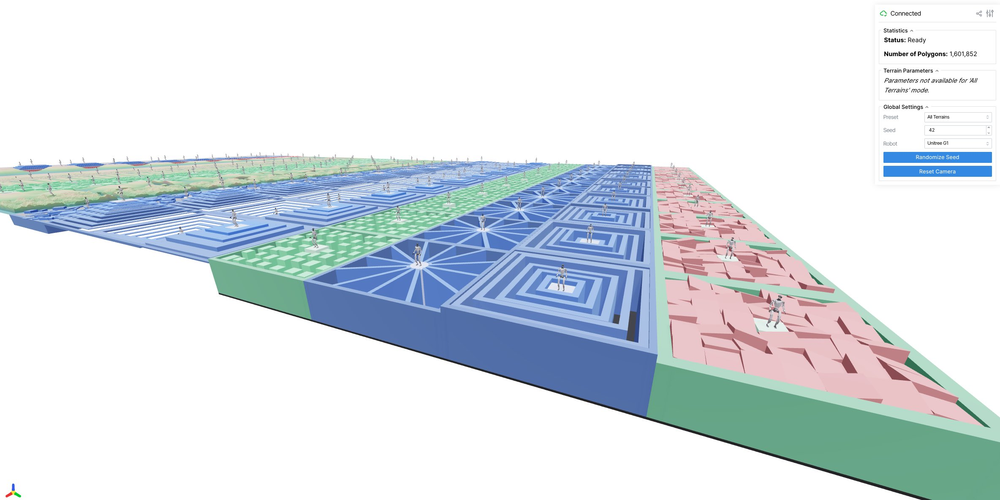

Changelog#
Upcoming version (not yet released)#
Added#
Added
MeshCfg, a spec editor that matches mesh assets by name and edits their asset-level attributes. The first attribute ismaxhullvert, which caps the collision convex hull’s vertex count to lower narrowphase cost.Added
SimulationCfg.broadphaseandSimulationCfg.broadphase_filterto configure MuJoCo Warp’s broadphase collision algorithm and bounding-volume filters.
Changed#
Enabled skybox rendering for camera sensors.
Command delay on fusable actuators (ideal PD, DC motor) now applies one shared lag per environment across all fused actuators sharing a delay config, matching the built-in actuator path, rather than an independent lag per actuator group (#1035).
Fixed#
Fixed
mdp.bad_orientationreturning NaN when float32 rounding inquat_apply_inversepushed the projected-gravity z-component slightly outside[-1, 1], makingtorch.acosreturn NaN and silently suppressing the termination for flipped robots. The argument is now clamped to[-1, 1].Fixed a crash when using command delay on ideal PD (or other custom) actuators whenever
num_envsdiffered from the number of delayed targets, and fused ideal PD and DC motor actuators sharing a transmission and delay config into a single gather, delay, control-law evaluation, and control write, removing per-group host overhead (#1035).
Version 1.5.0 (June 28, 2026)#
Added#
Added
reduce="max"toMetricsTermCfgfor reporting episode-peak values (e.g. peak power, peak contact force) without needing stateful wrapper classes.Added
BuiltinDcMotorActuator, a native MuJoCo<dcmotor>wrapper. Supports voltage / position / velocity input modes with back-EMF, configurable motor constants, and optional integral, slew, inductance, thermal, LuGre, and cogging extensions.Added
scale_with_difficultytoHfRandomUniformTerrainCfg. When enabled, the noise amplitude scales with difficulty (flat at 0, fullnoise_rangeat 1) so the terrain progresses in a curriculum. Defaults toFalse, preserving the previous difficulty-independent behavior.Added material domain randomization functions for MuJoCo Warp RGB rendering:
dr.mat_emission,dr.mat_specular,dr.mat_shininess, anddr.mat_texrepeat.
Changed#
Bumped
rsl-rl-libfrom 5.2.0 to 5.4.0.Bumped
mujocoandmujoco-warpto 3.10, both pinned from PyPI. Thepy.mujoco.orgnightly index and themujoco-warpgit pin are dropped, so resolution no longer breaks when nightly wheels are garbage-collected.Warning
SimulationCfg.ls_parallelis deprecated and now ignored, since parallel linesearch was removed upstream in MuJoCo Warp. Setting it emits aDeprecationWarning; remove it from anySimulationCfgyou construct.Curriculum-mode terrain difficulty is now deterministic across rows and reaches the configured
difficulty_rangeendpoints (#1027).Heightfield terrains now color by absolute height with a diverging palette (cool below the ground plane, green at ground level, warm above) on a fixed scale, replacing the per-patch normalization. Color is now consistent across terrains, and low-amplitude terrain such as
random_roughreads as gently tinted ground instead of high-contrast noise.BoxNestedRingsTerrainCfgnow builds uniform-height concentric ridges whose separating gaps widen with difficulty, replacing the random per-ring heights. Rings are colored by height (like the other terrains) and the outer border matches the ring height.Terrain generation no longer prints timing information to stdout.
Fixed#
Fixed domain randomization events that target different
axesof the same model field (e.g. twodr.geom_sizeevents scaling axis 0 and axis 1 separately) silently clobbering each other. Each event now writes back only the axes it targeted, so per-axis events compose (#1042).Regenerated the bundled MuJoCo type stubs, which had drifted from the installed mujoco version. CI now regenerates them and fails if they are stale, so they stay in sync going forward. Run
make stubsto update them (#1048).Fixed
select_gpuscrashing whenCUDA_VISIBLE_DEVICEScontains MIG UUIDs instead of numeric indices.Fixed pyramid-stairs terrains (
BoxPyramidStairsTerrainCfg,BoxInvertedPyramidStairsTerrainCfg, andBoxOpenStairsTerrainCfg) leaving an empty, geometry-free border at difficulty 0, where the step height collapses to zero. The flat border frame is now always generated as solid geometry flush with the ground (#1033).Fixed
HfPerlinNoiseTerrainCfgfailing to compile at difficulty 0, where the target height collapses to zero and MuJoCo rejects the non-positive heightfield size.Fixed
BoxRandomGridTerrainCfgproducing NaN colors (and failing to build) at difficulty 0, where the grid height is zero and the color normalization divided by zero.Fixed the center platform z-fighting with surrounding geometry in
BoxRandomGridTerrainCfg(grid cells were left underneath the platform) andBoxRandomSpreadTerrainCfg(the platform duplicated the floor surface).Fixed
BoxNarrowBeamsTerrainCfgsquare platform corners protruding between the beams at high difficulty; the platform now shrinks to stay within the beams’ angular coverage.Fixed
BoxSteppingStonesTerrainCfgreconfiguring abruptly at a difficulty threshold, where the stone grid re-tiled as its spacing crossed an integer boundary, and leaving an oversized gap around the center platform. The grid is now difficulty-independent and the platform snaps to it as a clean island.Fixed
train --video,play, anddemocrashing withOpenGL platform library not loadedon headless Linux hosts that don’t pre-setMUJOCO_GL. The default is now applied inmjlab/__init__.py(Linux only) so it takes effect before mujoco’s GL backend selection runs.Fixed motion tracking re-anchoring to a stale robot pose after a mid-episode motion resample.
MotionCommand._update_commandnow callssim.forward()after resampling so relative body poses read the post-teleport state (#1068).
Version 1.4.0 (May 26, 2026)#
Added#
Added
BuiltinPdActuator, the implicit-integration version ofIdealPdActuator. Same interface (position + velocity targets, kp/kd gains), but expresses the PD as native MuJoCo<position>and<velocity>elements so theimplicit/implicitfastintegrators include the kp/kd derivatives in their velocity update. The actuator stays stable at gain/timestep combinations where explicit Python PD would diverge, which matters when you want to run a real motor’s stiff on-board PD gains in sim.effort_limitis enforced as a sum-clamp on the two PD terms viajnt_actfrcrange(ortendon_actfrcrange). Supported bydr.pd_gainsanddr.effort_limits.Added
mdp.projected_gravity_from_sensor, an observation that derives projected gravity from aframezaxisup-vector sensor (negated) rather than from the root body orientation. Unlikemdp.projected_gravity, it reflects the sensor’s site frame, so it can observe IMU mounting domain randomization (e.g. viadr.site_quat). Go1 and G1 ship animu_upvectorsensor for this.Added
DebugVisualizer.add_boxfor drawing an axis-oriented box primitive, mirroringadd_ellipsoid. Supported by both the native and Viser viewers.sizeis the box half-extents (#992).Added
--log-rootCLI option totrain,play, andevaluatescripts for choosing where training logs are stored. Defaults tologs/rsl_rl(unchanged behavior). Useful for directing outputs to a scratch disk or shared mount.RewardManager,TerminationManager, andMetricsManagernow validate that every term function returns a tensor of shape(num_envs,)when evaluated, raising a clearValueErrornaming the offending term instead of silently broadcasting or crashing with an opaque error later during training.Added
ContactSensor.primary_namesproperty to expose the resolved primary names in the order they appear along the per-contact axis of the output tensors. This makes it possible to map a contact-data column back to the primary it belongs to (#914).Added per-world mesh variant support via
VariantEntityCfg. Each world in a batched simulation can now use a different mesh asset for the same logical entity (e.g. world 0 holds a cube, world 1 a sphere). Variants are passed as adict[str, Callable]of named spec callables; the optionalassignmentfield controls how worlds map to variants and acceptsNone(uniform), adict[str, float]of per-variant weights, or a customCallable[[int], Sequence[int]]. Mesh-derived constants (collision bounds, body inertials, subtree mass, inverse weights) are compiled per-variant and stored as per-world arrays in the Warp model, so domain randomization, the native viewer, the offscreen renderer, and the Viser viewer all pick up the variant assignment automatically. Variants must share the same kinematic structure (same bodies, joints, joint types); only mesh geoms may differ. Assignment is fixed at simulation init. See Heterogeneous Worlds for usage. With help from @XiangruiJiang.Per-world mesh variants now support per-variant materials and textures. Each variant can reference its own named material, which is automatically prefixed and scattered via
geom_matidalongside the existinggeom_dataidtable. Variants without a material getmatid = -1. Contribution by @omarrayyann.Added
dr.geom_matidto randomize which baked material each geom uses per environment, sampling uniformly fromasset_cfg.material_names.
Changed#
Entitynow raises a clear error at construction when its spec contains more than one freejoint. An entity models a single system rooted at one body, so it has at most one freejoint; a second one was previously accepted silently and only surfaced later as a cryptic shape mismatch when writing root state. Model each detached floating body as its own entry inSceneCfg.entitiesinstead.Changed
compute_root_relative_mpkpeto re-anchor the reference to the robot’s root each step, removing yaw drift as well as translation so it measures intrinsic body pose error.Changed
compute_joint_velocity_errorfrom an L2 norm to a per-joint RMS, so it no longer scales with the number of joints.Bumped
mujocoto 3.8 andmujoco-warpto 3.8.0. Themulticcdenable flag was removed in mujoco 3.8 (it became default-on), so configs that listed"multiccd"inMujocoCfg.enableflagsneed to drop it.Camera segmentation now matches
mujoco_warp’s typed segmentation output.CameraSensorData.segmentationstores(object_id, object_type)pairs in shape[B, H, W, 2]instead of the previous legacy geom-id-only layout. Contribution by @tkelestemur.Sped up
RayCasterpost-processing by removing boolean-mask indexing operations and replacing them withmasked_fill_plus a clamped-distance formulation ofhit_pos_wthat places misses at the world origin. This removes all CUDA syncs from the ray post-process, letting the CPU thread proceed while GPU-based sensing runs. Contribution by @bd-pdomanico.Bumped
rsl-rl-libfrom 5.0.1 to 5.2.0. This bringstorch.compilesupport for PPO and Distillation, and optional std clamping and constant std inGaussianDistribution. No code changes required on the mjlab side.TerrainEntityCfgdebug visualization sites (environment origins, terrain origins, flat patches) are now off by default. Setdebug_vis=Trueto re-enable them. The sites inflatednsiteand caused a measurable slowdown in the per-stepsite_local_to_globalkernel (#942).Task package load failures during
mjlabimport now print the full traceback (and the entry point’s module path) tostderrinstead of just the exception message, making it easier to pinpoint the source of import errors when running commands likelist-envs(#910). Contribution by @saikishor.Clarified
ContactSensorshape conventions: per-contact fields (found,force,torque,dist,pos,normal,tangent) have shape[B, P * num_slots, ...]while per-primary air-time fields (current_air_time,last_air_time,current_contact_time,last_contact_time) have shape[B, P], wherePis the number of resolved primaries (#914).Event functions now share a single
resolve_env_idshelper to expandenv_ids=Noneto all environments, replacing five copies of the same guard.push_by_setting_velocityandapply_external_force_torqueacceptenv_ids=Nonetoo, so they work as global-time interval terms. Documented when to useapply_external_force_torque(a constant, self-managed wrench) versusapply_body_impulse(transient, automatic impulses) versuspush_by_setting_velocity(an instantaneous velocity kick).
Fixed#
Removed use of deprecated
warp-langsymbols (wp.context.runtimeandwp.context.Device) that were dropped in newerwarp-langreleases, causingAttributeError: module 'warp' has no attribute 'context'at import/runtime. mjlab now useswp.get_cuda_driver_version()andwp.Deviceinstead (#967). Contribution by @rdeits.Fixed the tracking
evaluatescript scoring each metric against the next motion frame; the reference is now snapshotted before each step to match the reward.Fixed the tracking end-effector metrics silently scoring zero for an unknown body name; they now raise
ValueError.Fixed
compute_mpkpemeasuring root-relative instead of global error; it now uses the global referencebody_pos_w(#1006).Fixed heavy flicker in offscreen training videos on rough-terrain tasks. The renderer recomputed its context “neighbor” robots every frame from
env_origins, which the terrain curriculum mutates on reset, so the neighbor set kept changing and robots popped in and out. The neighbor set is now computed once and cached (#979).Fixed command delay only applying to an actuator’s position target.
IdealPdActuatorandDcMotorActuatoralso use velocity and effort, which arrived undelayed and out of sync; all command targets now share one delay. Zero-reference setups are unaffected.Fixed duplicate random seeds across nodes in multi-node training. The per-process seed offset in
scripts/train.pynow uses the globalRANKinstead ofLOCAL_RANK. Contribution by @bd-pdomanico.Fixed
apply_body_impulsefiring an impulse on the very first step (and the first step after every reset) instead of starting with a cooldown as documented. The cooldown is now sampled lazily on the first call so impulse timing is decorrelated from episode resets (#973).Fixed
dr.pd_gainsanddr.effort_limitssilently no-oping when passed anOperationobject (e.g.dr.scale) instead of a string. Both functions now acceptOperation | strlike every other DR event and raiseValueErrorfor unsupported operations (#971).Fixed
ContactSensorwithglobal_frame=Trueandreduce∈ {"none","mindist","maxforce"} producing forces rotated onto the wrong axis. The contact-frame→world rotation matrix had its columns ordered[tangent, tangent2, normal]instead of[normal, tangent, tangent2], projecting the normal-force component onto a tangent direction. Contribution by @bd-pdomanico.Fixed
extras["log"]entries written by reward terms (e.g.Metrics/*values in velocity tasks) being silently discarded on any step where at least one environment resets._reset_idxwas clearing the dict afterreward_manager.compute()had already populated it. The clear now happens at the top ofstep()andreset()so that all entries survive (#957).Fixed
ContactSensor.compute_first_contactandcompute_first_airoccasionally missing events when a contact began or ended right at the last physics substep of a control step.current_contact_time/current_air_timeaccumulate in float32 and can drift a few ULPs pastdt, but the defaultabs_tolof1e-8sat at the noise floor and rejected the comparison. Raised the default to1e-6, which stays well below typical controldtwhile comfortably covering float32 accumulation noise (#933). Contribution by @paLeziart.Fixed
out_of_terrain_boundsusing stale terrain dimensions. It readTerrainGeneratorCfg.num_colsdirectly, which is ignored in curriculum mode (the generator useslen(sub_terrains)columns instead), and it did not account forborder_width. The termination now reads the effective grid shape fromterrain.terrain_originsand includes the border in the footprint, so robots no longer reset while still on valid terrain (or fail to reset after running off it) (#923).ObservationManagernow skips observation groups that end up with zero active terms (e.g. all terms set toNone) with a log message, instead of crashing later intorch.stack/torch.cat. This lets a shared runner config define groups that become empty under certain runtime flags (e.g. model-specific terms all disabled for one variant). The whole group can still be set toNoneto disable it explicitly.Fixed a runtime broadcast error in
ContactSensorwhen combiningnum_slots > 1withtrack_air_time=Trueand more than one primary. Air-time tracking now reducesfoundacross slots so that a primary is considered in contact when any of its slots reports a match (#914).Updated the
create_new_task.ipynbColab tutorial to importXmlActuatorCfginstead of the removedXmlVelocityActuatorCfg. Added a regression test (tests/test_notebooks.py) that parses each notebook cell and verifies that everyfrom mjlab... import Xreference resolves, so future renames in the mjlab public API can’t silently rot the tutorials (#913).Fixed
ObservationManagersilently sharing a singleNoiseModelCfginstance across observation groups that declared terms with the same name._group_obs_class_instanceswas keyed by term name alone, so the last group processed in_prepare_termsoverwrote earlier groups’ instances. Symptoms included the wrong noise config being applied, shared per-episode state forNoiseModelWithAdditiveBias(e.g. bias drawn from the wrongbias_noise_cfg), and missedreset()calls for overwritten instances. Instances are now keyed by(group_name, term_name)so each group owns its own noise model.Fixed
CurriculumManager.get_active_iterable_termsraisingTypeErrorwhen a term’s state was a dict. The dict branch indexed the output list by term name instead of appending to the localdatalist. No in-tree caller currently invokes this method, so the bug was latent.
Version 1.3.0 (April 14, 2026)#
Added#
Added
ManagerBasedRlEnvCfg.auto_resetflag. WhenTrue(default),step()continues to reset done environments in place and returns the post-reset observation. WhenFalse,step()skips the reset block and returns the terminal observation directly; the caller must callreset(env_ids=...)for done environments before the nextstep()or aRuntimeErroris raised. Enables access to the true terminal state for algorithms that need it. Note that mjlab’s bundledtrain.pyuses rsl_rl’sOnPolicyRunner, which does not drive manual resets, soauto_reset=Falseis intended for custom training loops (#900).Added
ActuatorCfg.viscous_dampingfor passive velocity proportional damping (f = -b·v), distinct from the PD derivative gaindampingused by position and velocity actuators. Maps to<joint damping>for JOINT transmission and<tendon damping>for TENDON transmission. Defaults toNone(preserves the XML value).Added
RecorderManagerfor logging observations, actions, or arbitrary environment data during rollouts. Implement aRecorderTermsubclass and register it in therecordersdict onManagerBasedRlEnvCfg. The manager providesrecord_pre_reset,record_post_reset, andrecord_post_steplifecycle hooks with no opinion on how data is stored.Added
termination_curriculum()for scheduling changes to termination term parameters during training, matching the existingreward_curriculumpattern. Both now share a single internal engine with init-time validation of stage ordering, field existence, and param keys.Added
reducefield toMetricsTermCfg. Settingreduce="last"reports the value from the final step of the episode rather than the episode mean, which is useful for binary success metrics.Added
RelativeJointPositionActionfor joint position control relative to the current configuration. The target iscurrent_pos + action * scale, so a zero action holds the current configuration rather than commanding the default pose.Added
pair_friction()for randomizing geom-pair friction overrides (pair_frictioninmjModel), with anisotropic=Trueoption that mirrors the symmetric tangent and roll axes so single-axis randomization does not leave the paired axis stale.Added
STAIRS_TERRAINS_CFGterrain preset for progressive stair curriculum training and@terrain_presetdecorator for composing terrain configurations from reusable presets.Added cartpole balance and swingup tasks (
Mjlab-Cartpole-BalanceandMjlab-Cartpole-Swingup) with a tutorial that walks through building an environment from scratch.Added motion imitation documentation with preprocessing instructions. The README now links here instead of the BeyondMimic repository, which produced incompatible NPZ files when used with mjlab (#777).
Added
margin,gap, andsolmixfields toCollisionCfgfor per geom contact parameter configuration (#766).NaN guard now captures mocap body poses (
mocap_pos,mocap_quat) when the model has mocap bodies, enabling full state reconstruction in the dump viewer for fixed-base entities.Implemented
ActionTermCfg.clipfor clamping processed actions after scale and offset (#771).Added
qfrc_actuatorandqfrc_externalgeneralized force accessors toEntityData.qfrc_actuatorgives actuator forces in joint space (projected through the transmission).qfrc_externalrecovers the generalized force from body external wrenches (xfrc_applied) (#776).Added
RewardBarPanelto the Viser viewer, showing horizontal bars for each reward term with a running mean over ~1 second (#800).Added
per_substepflag toMetricsTermCfgfor evaluating metrics once per physics substep inside the decimation loop. The per substep values are averaged within each environment step, so episode averages remain comparable to regular per step metrics.Added
project-instinct/InstinctMJto the research page’s list of projects built on mjlab.Added a Checkpoints tab to the Viser play viewer for hot-swapping checkpoints without restarting. Works with local directories and W&B runs (#751). Contribution by @omarrayyann.
Added
"segmentation"camera data type for per-pixel geom ID output alongside RGB and depth, and a multi-cube goal-conditioned lifting task (Mjlab-Multi-Cube-Seg-Yam) that uses it (#862). Contribution by @pthangeda.
Changed#
Renamed the
list_envsconsole script tolist-envsfor consistency with the other hyphenated entry points (viz-nan,export-scene). Invoke viauv run list-envs.ActuatorCfg.armatureandActuatorCfg.frictionlossnow default toNoneinstead of0.0.Nonepreserves the value defined in the XML. Previously, builtin actuators would silently overwrite XML joint and tendon properties with zero when these fields were not explicitly set. To restore the old behavior, passarmature=0.0orfrictionloss=0.0explicitly.Actuator delay is now configured inline on any
ActuatorCfgsubclass (e.g.BuiltinPositionActuatorCfg(..., delay_min_lag=2, delay_max_lag=5)) instead of wrapping withDelayedActuatorCfg.DelayedActuator,DelayedActuatorCfg, andDelayedBuiltinActuatorGroupare removed.Removed
delay_targetfromActuatorCfg. Delay now always applies to the actuator’scommand_fieldautomatically. Multi-target delay (delay_target=("position", "velocity")) is no longer supported.XmlPositionActuatorCfg,XmlVelocityActuatorCfg,XmlMotorActuatorCfg, andXmlMuscleActuatorCfgare replaced by a singleXmlActuatorCfgthat auto detects the actuator type from XML. Passcommand_field=...to override detection.Replaced the viser viewer internals with the
mjviserpackage. Scene creation, mesh conversion, and overlay rendering (contacts, forces, inertia, tendons, joints, frames) are now provided by mjviser. The viewer exposes a new Visualization tab for overlay controls and a Groups tab for geom/site visibility. Debug visualization and warp tensor conversion remain in mjlab’sMjlabViserScenesubclass (#839).In curriculum terrain mode, each terrain type now gets exactly one column (
num_colsis set tolen(sub_terrains)). Theproportionfield now controls robot spawning distribution across columns rather than column count. Random mode is unchanged (#811).BoxSteppingStonesTerrainCfgstone size now decreases with difficulty, interpolating from the large end ofstone_size_rangeat difficulty 0 to the small end at difficulty 1 (#785).Removed deprecated
TerrainImporterandTerrainImporterCfgaliases. UseTerrainEntityandTerrainEntityCfginstead (#667).Entity.clear_state()is deprecated. UseEntity.reset()instead.clear_stateonly zeroed actuator targets without resetting actuator internal state (e.g. delay buffers), which could cause stale commands after teleporting the robot to a new pose.Removed
EntityData.generalized_force. The property was bugged (indexed free joint DOFs instead of articulated DOFs) and the name was ambiguous. Useqfrc_actuatororqfrc_externalinstead (#776).get_wandb_checkpoint_pathnow filters checkpoints server-side via thepatternparameter, avoiding unnecessary pagination and tolerance to corrupted metadata (#898).
Fixed#
trainandplaynow print a top-level usage message when invoked with-h/--helpand no task argument, pointing users atlist-envsand<TASK> --help(#905).Fixed ghost geom filtering in the Viser viewer. Ghost geoms were selected by collision flags, so collision-disabled robot geoms appeared as ghosts. The viewer now uses visual alpha to determine which geoms to render.
Scene now warns when an attached entity or terrain spec has non-default
<option>fields (e.g.<flag contact="disable"/>), which are silently dropped byMjSpec.attach(). UseMujocoCfgto set simulation options instead (#885).Fixed
SceneEntityCfgnames and IDs ordering mismatch whenpreserve_order=False(#876). Contribution by @jsw7460.Fixed ONNX export path resolution in the velocity, manipulation, and tracking runners when a parent directory name contains the word
"model"(#867). Contribution by @gokulp01.export-scenenow writes only referenced assets and places them correctly under the output directory. Previously, asset keys containing path traversal could write files outside the output directory, and all spec assets were included regardless of whether the scene XML referenced them (#858).electrical_power_costnow usesqfrc_actuator(joint space) instead ofactuator_force(actuation space) for mechanical power computation. Previously the reward was incorrect for actuators with gear ratios other than 1 (#776).create_velocity_actuatorno longer setsctrllimited=Truewithinheritrange=1.0. This caused aValueErrorfor continuous joints (e.g. wheels) that have no position range defined (#787).write_root_com_velocity_to_simno longer fails with tensorenv_idson floating base entities (#793).Joint limits for unlimited joints are now set to [-inf, inf] instead of [0, 0]. Previously the zero range caused incorrect clamping for entities with unlimited hinge or slide joints.
Contact force visualization now copies
ctrlinto the CPUMjDatabefore callingmj_forward. Actuators that compute torques in Python (DcMotorActuator,IdealPdActuator) previously showed incorrect contact forces because the viewer ran withctrl=0(#786).BoxSteppingStonesTerrainCfgno longer creates a large gap around the platform. Stones are now only skipped when their center falls inside the platform; edges that extend under the platform are allowed since the platform covers them (#785).dr.pseudo_inertiano longer loads cuSOLVER, eliminating ~4 GB of persistent GPU memory overhead. Cholesky and eigendecomposition are now computed analytically for the small matrices involved (4x4 and 3x3) (#753).Set terrain geom mass to zero so that the static terrain body does not inflate
stat.meanmass, which made force arrow visualization invisible on rough terrain (#734, #537).Native viewer now syncs
qpos0when domain randomized, fixing incorrect body positions afterdr.joint_default_posrandomization (#760).command_manager.compute()is now called duringreset()so that derived command state (e.g. relative body positions in tracking environments) is populated before the first observation is returned (#761).RayCastSensorwithray_alignment="yaw"or"world"now correctly aligns the frame offset when attached to a site or geom with a local offset from its parent body. Previously only ray directions and pattern offsets were aligned, causing the frame position to swing with body pitch/roll (#775).
Version 1.2.0 (March 6, 2026)#
Breaking API changes
randomize_fieldno longer exists. Replace calls with typed functions from the newdrmodule (e.g.dr.geom_friction,dr.body_mass).EventTermCfgno longer acceptsdomain_randomization. The@requires_model_fieldsdecorator on eachdrfunction takes care of field expansion automatically.Scene.to_zip()is deprecated. UseScene.write(path, zip=True).RslRlModelCfgno longer acceptsstochastic,init_noise_std, ornoise_std_type. Usedistribution_cfginstead (e.g.{"class_name": "GaussianDistribution", "init_std": 1.0, "std_type": "scalar"}). Existing checkpoints are automatically migrated on load.
Added#
Added
"step"event mode that fires every environment step.Added
apply_body_impulseevent for applying transient external wrenches to bodies with configurable duration and optional application point offset.ONNX auto-export and metadata attachment for manipulation tasks (lift cube) on every checkpoint save, matching the velocity and tracking task behavior.
Multi-frame
RayCastSensor: pass a tuple ofObjReftoframefor per-site raycasting with independent body exclusion. New properties:num_frames,num_rays_per_frame. NewRayCastDatafields:frame_pos_wandframe_quat_w.RingPatternCfgray pattern for concentric ring sampling around each frame.TerrainHeightSensor, aRayCastSensorsubclass that computes per-frame vertical clearance above terrain (sensor.data.heights). Velocity task configs now use it forfeet_clearance,feet_swing_height, andfoot_height, replacing the previous world-Z proxy that was incorrect on rough terrain.Cloud training support via SkyPilot and Lambda Cloud, with documentation covering setup, monitoring, and cost management.
W&B hyperparameter sweep scripts that distribute one agent per GPU across a multi-GPU instance.
Contributing guide with documentation for shared Claude Code commands (
/update-mjwarp,/commit-push-pr).Added optional
ViewerConfig.fovyand apply it in native viewer camera setup when provided.Native viewer now tracks the first non-fixed body by default (matching the Viser viewer behavior introduced in
716aaaa58ad7bfaf34d2f771549d461204d1b4ba).New
drmodule (mjlab.envs.mdp.dr) replacingrandomize_fieldwith typed per-field domain randomization functions. Each function automatically recomputes derived fields viaset_const. Highlights:Camera and light randomization:
dr.cam_fovy,dr.cam_pos,dr.cam_quat,dr.cam_intrinsic,dr.light_pos,dr.light_dir. Camera and light names are now supported inSceneEntityCfg(camera_names/light_names).dr.pseudo_inertiafor physics-consistent randomization ofbody_mass,body_ipos,body_inertia, andbody_iquatvia the pseudo-inertia matrix parameterization (Rucker & Wensing 2022). Replaces the removeddr.body_inertia/dr.body_iquat.dr.geom_sizewith automatic recomputation ofgeom_rboundandgeom_aabbfor broadphase consistency.dr.tendon_armatureanddr.tendon_frictionloss.dr.body_quat,dr.geom_quat, anddr.site_quatwith RPY perturbation composed onto the default quaternion.Extensible
OperationandDistributiontypes. Users can define custom operations and distributions as class instances and pass them anywhere a string is accepted. Built-in instances (dr.abs,dr.scale,dr.add,dr.uniform,dr.log_uniform,dr.gaussian) are exported from thedrmodule.dr.mat_rgbafor per-world material color randomization. Tints the texture color, useful for randomizing appearance of textured surfaces. Material names are now supported inSceneEntityCfg(material_names).Fixed
dr.effort_limitsdrifting on repeated randomization.Fixed
dr.body_com_offsetnot triggeringset_const.
export-sceneCLI script to export any task scene or asset_zoo entity (g1,go1,yam) to a directory or zip archive for inspection and debugging.yam_lift_cube_vision_env_cfgnow randomizes cube color (dr.geom_rgba) on every reset whencam_type="rgb".The native viewer now reflects per-world DR changes to visual model fields on each reset. Geom appearance, body and site poses, camera parameters, and light positions are all synced from the GPU model before rendering. Inertia boxes (press
I) and camera frustums (pressQ) update correctly when the corresponding fields are randomized. See Domain Randomization for viewer-specific caveats.MaterialCfg.geom_names_exprfor assigning materials to geoms by name pattern duringedit_spec.TerrainEntityCfgnow exposestextures,materials, andlightsas configurable fields (previously hardcoded). Settextures=(),materials=()to use flatdr.geom_rgbainstead of the default checker texture.DebugVisualizernow supports ellipsoid visualization viaadd_ellipsoid.Interactive velocity joystick sliders in the Viser viewer. Enable the joystick under Commands/Twist to override velocity commands with manual sliders for
lin_vel_x,lin_vel_y, andang_vel_z(#666).Per-term debug visualization toggles in the Viser viewer. Individual command term visualizers (e.g. velocity arrows) can now be toggled independently under Scene/Debug Viz.
Viewer single-step mode: press RIGHT arrow (native) or click “Step” (Viser) to advance exactly one physics step while paused.
Viewer error recovery: exceptions during stepping now pause the viewer and log the traceback instead of crashing the process.
Native viewer runs forward kinematics while paused, keeping perturbation visuals accurate.
Viewer speed multipliers use clean power-of-2 fractions (1/32x to 1x).
Visualizers display the realtime factor alongside FPS.
joint_torques_l2now respectsSceneEntityCfg.actuator_ids, allowing penalization of a subset of actuators instead of all of them (#703). Contribution by @saikishor.Terrain is now a proper
Entitysubclass (TerrainEntity). This allows domain randomization functions to target terrain parameters (friction, cameras, lights) viaSceneEntityCfg("terrain", ...).TerrainImporter/TerrainImporterCfgremain as aliases but will be deprecated in a future version.Added
upload_modeloption toRslRlBaseRunnerCfgto control W&B model file uploads (.ptand.onnx) while keeping metric logging enabled (#654).Scene.write(output_dir, zip=False)exports the scene XML and mesh assets to a directory (or zip archive). ReplacesScene.to_zip().Entity.write_xml()andScene.write()now apply XML fixups (empty defaults, duplicate nested defaults) and strip buffer textures thatMjSpec.to_xml()cannot serialize.fix_spec_xmlandstrip_buffer_texturesutilities inmjlab.utils.xml.
Changed#
Native viewer now syncs
xfrc_appliedto the render buffer and draws arrows for any nonzero applied forces. Mouse perturbation forces are converted toqfrc_applied(generalized joint space) so they coexist with programmatic forces onxfrc_appliedwithout conflict.ViewerConfig.OriginType.WORLDnow configures a free camera at the specified lookat point instead of auto tracking a body. A newAUTOorigin type (now the default) preserves the previous auto tracking behavior.Upgraded
rsl-rl-libfrom 4.0.1 to 5.0.1.RslRlModelCfgnow usesdistribution_cfgdict instead ofstochastic/init_noise_std/noise_std_type. Existing checkpoints are automatically migrated on load.Reorganized the Viser Controls tab into a cleaner folder hierarchy: Info, Simulation, Commands, Scene (with Environment, Camera, Debug Viz, Contacts sub-folders), and Camera Feeds. The Environment folder is hidden for single-env tasks and the Commands folder is hidden when no command terms are active.
Viser camera tracking is now enabled by default so the agent stays in frame on launch.
Self collision and illegal contact sensors now use
history_lengthto catch contacts across decimation substeps. Reward and termination functions readforce_historywith a configurableforce_threshold.Replaced the single
scaleparameter inDifferentialIKActionCfgwith separatedelta_pos_scaleanddelta_ori_scalefor independent scaling of position and orientation components.Improved offscreen multi environment framing by selecting neighboring environments around the focused env instead of first N envs.
Tuned tracking task viewer defaults for tighter camera framing.
Disabled shadow casting on the G1 tracking light to avoid duplicate stacked shadows when robots are close.
Fixed#
Fixed actuator target resolution for entities whose
spec_fnuses internalMjSpec.attach(prefix=...)(#709).Fixed viewer physics loop starving the renderer by replacing the single sim-time budget with a two-clock design (tracked vs actual sim time). Physics now self-corrects after overshooting, keeping FPS smooth at all speed multipliers.
Bundled
ffmpegformediapyviaimageio-ffmpeg, removing the requirement for a systemffmpeginstall. Thanks to @rdeits-bd for the suggestion.Fixed
height_scanreturning ~0 for missed rays; now defaults tomax_distance. Replacedclip=(-1, 1)withscalenormalization in the velocity task config. Thanks to @eufrizz for reporting and the initial fix (#642).Fixed ghost mesh visualization for fixed-base entities by extending
DebugVisualizer.add_ghost_meshto optionally acceptmocap_posandmocap_quat(#645).Fixed viser viewer crashing on scenes with no mocap bodies by adding an
nmocapguard, matching the native viewer behavior.Fixed offscreen rendering artifacts in large vectorized scenes by applying a render local extent override in
OffscreenRendererand restoring the original extent on close.Fixed
RslRlVecEnvWrapper.unwrappedto return the base environment, ensuring checkpoint state restore and logging work correctly when wrappers such asVideoRecorderare enabled.
Version 1.1.1 (February 14, 2026)#
Added#
Added reward term visualization to the native viewer (toggle with
P) (#629).Added
DifferentialIKActionfor task-space control via damped least-squares IK. Supports weighted position/orientation tracking, soft joint-limit avoidance, and null-space posture regularization. Includes an interactive viser demo (scripts/demos/differential_ik.py) (#632).
Fixed#
Fixed
play.pydefaulting to the base rsl-rlOnPolicyRunnerinstead ofMjlabOnPolicyRunner, which caused aTypeErrorfrom an unexpectedcnn_cfgkeyword argument (#626). Contribution by @griffinaddison.
Changed#
Removed
body_mass,body_inertia,body_pos, andbody_quatfromFIELD_SPECSin domain randomization. These fields have derived quantities that requireset_constto recompute; without that call, randomizing them silently breaks physics (#631).Replaced
moviepywithmediapyfor video recording.mediapyhandles cloud storage paths (GCS, S3) natively (#637).

Version 1.1.0 (February 12, 2026)#
Added#
Added RGB and depth camera sensors and BVH-accelerated raycasting (#597).
Added
MetricsManagerfor logging custom metrics during training (#596).
{kind=link}

Added many new terrains including
HfDiscreteObstaclesTerrainCfg,HfPerlinNoiseTerrainCfg,BoxSteppingStonesTerrainCfg,BoxNarrowBeamsTerrainCfg,BoxRandomStairsTerrainCfg, and more. Added flat patch sampling for heightfield terrains (#542, #581).Added site group visualization to the Viser viewer (Geoms and Sites tabs unified into a single Groups tab) (#551).
Added
env_idsparameter toEntity.write_ctrl_to_sim(#567).
Changed#
Upgraded
rsl-rl-libto 4.0.0 and replaced the custom ONNX exporter with rsl-rl’s built-inas_onnx()(#589, #595).sim.forward()is now called unconditionally after the decimation loop. See When do I need to call sim.forward()? for details (#591).Unnamed freejoints are now automatically named to prevent
KeyErrorduring entity init (#545).
Fixed#
Fixed
randomize_pd_gainscrash withnum_envs > 1(#564).Fixed
ctrl_idsindex error with multiple actuated entities (#573). Reported by @bwrooney82.Fixed Viser viewer rendering textured robots as gray (#544).
Fixed Viser plane rendering ignoring MuJoCo size parameter (#540).
Fixed
HfDiscreteObstaclesTerrainCfgspawn height (#552).Fixed
RaycastSensorvisualization ignoring the all-envs toggle (#607). Contribution by @oxkitsune.
Version 1.0.0 (January 28, 2026)#
Initial release of mjlab.